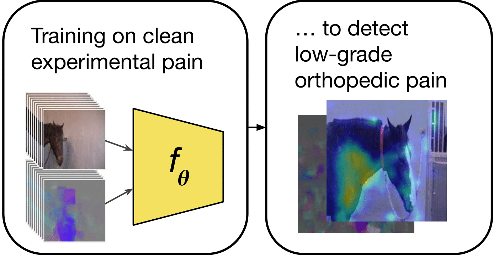
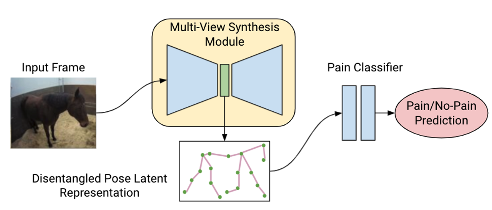
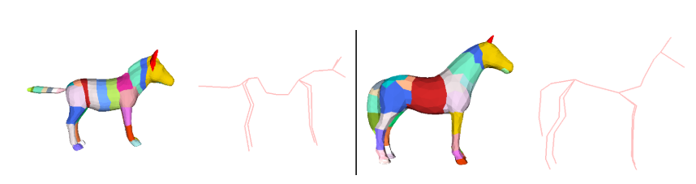
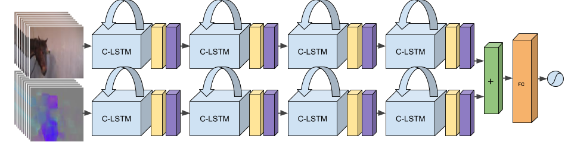
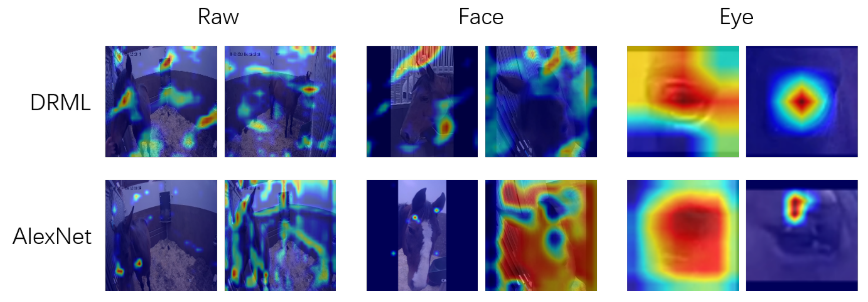

Sofia Broomé
Preprints | Publications | AboutAbout
I have (as of Sept 2 2022) a Ph.D. in machine learning from KTH Royal Institute of Technology in Stockholm, at the Robotics, Perception & Learning (RPL) division. My advisor has been Prof. Hedvig Kjellström. I was also co-advised by Prof. Pia Haubro Andersen. My thesis, with title Learning Spatiotemporal Features in Low-Data and Fine-Grained Action Recognition with an Application to Equine Pain Behavior can be found here.
My research project has revolved around trying to detect horses' pain expressions using computer vision. I've worked mostly with video data and have found that the temporal unfolding of these videos is decisive for reliable pain diagnostics; hence I'm interested in spatiotemporal features and action recognition as well.
Why recognize pain in horses?
Learning to detect pain in horses automatically is important because it is difficult for humans, even for veterinarian experts in equine pain. Horses are prey animals and tend to hide their pain, not wanting to show when they are vulnerable. Currently, many horses in Sweden are euthanized prematurely due to disorders which are not really lethal, such as problems with joints, because we detect the conditions too late for treatment.
Background
Before I started my Ph.D., I was in the engineering physics program at KTH, with my MSc in machine learning. My BSc thesis from 2014 was on the use of partial differential equations in climate modeling. Even longer ago I lived for two years in Paris, waitressed, and read David Foster Wallace books that made me want to not not study maths.
Reviewing
I was a reviewer for ECCV2020, CVPR2021, ICCV2021, WACV2022, ICLR2022, CVPR2022, NeurIPS 2022 and WACV2023. Assistant reviewer for RSS2020.
CV (last updated: August 2022)
Google scholar page
Twitter
Github
E-mail: broome.sofia [at] gmail.com
News
Publications
|
Going Deeper than Tracking: A Survey of Computer-Vision Based Recognition of Animal Pain and Emotions
Abstract: Advances in animal motion tracking and pose recognition have been a game changer in the study of animal behavior. Recently, an increasing number of works go ‘deeper’ than tracking, and address automated recognition of animals’ internal states such as emotions and pain with the aim of improving animal welfare, making this a timely moment for a systematization of the field. This paper provides a comprehensive survey of computer vision-based research on recognition of pain and emotional states in animals, addressing both facial and bodily behavior analysis. We summarize the efforts that have been presented so far within this topic—classifying them across different dimensions, highlight challenges and research gaps, and provide best practice recommendations for advancing the field, and some future directions for research. Sofia Broomé, Marcelo Feighelstein, Anna Zamansky, Gabriel Carreira Lencioni, Pia Haubro Andersen, Francisca Pessanha, Marwa Mahmoud, Hedvig Kjellström, Albert Ali Salah IJCV 2022. |
|
Recur, Attend or Convolve? On Whether Temporal Modeling Matters for Cross-Domain Robustness in Action Recognition
Abstract: Most action recognition models today are highly parameterized, and evaluated on datasets with appearance-wise distinct classes. It has also been shown that 2D Convolutional Neural Networks (CNNs) tend to be biased toward texture rather than shape in still image recognition tasks, in contrast to humans. Taken together, this raises suspicion that large video models partly learn spurious spatial texture correlations rather than to track relevant shapes over time to infer generalizable semantics from their movement. A natural way to avoid parameter explosion when learning visual patterns over time is to make use of recurrence. Biological vision consists of abundant recurrent circuitry, and is superior to computer vision in terms of domain shift generalization. In this article, we empirically study whether the choice of low-level temporal modeling has consequences for texture bias and cross-domain robustness. In order to enable a light-weight and systematic assessment of the ability to capture temporal structure, not revealed from single frames, we provide the Temporal Shape (TS) dataset, as well as modified domains of Diving48 allowing for the investigation of spatial texture bias in video models. The combined results of our experiments indicate that sound physical inductive bias such as recurrence in temporal modeling may be advantageous when robustness to domain shift is important for the task. Sofia Broomé, Ernest Pokropek, Boyu Li, Hedvig Kjellström WACV 2023, to appear. pdf | code |
|
Sharing Pain: Using Pain Domain Transfer for Video Recognition of Low Grade Orthopedic Pain in Horse

Sofia Broomé, Katrina Ask, Maheen Rashid, Pia Haubro Andersen, Hedvig Kjellström PLOS ONE 2022. pdf | code |
|
Equine Pain Behavior Classification via Self-Supervised Disentangled Pose Representation

Maheen Rashid, Sofia Broomé, Katrina Ask, Elin Hernlund, Pia Haubro Andersen, Hedvig Kjellström, Yong Jae Lee, WACV 2022. pdf | code |
|
hSMAL: Detailed Horse Shape and Pose Reconstruction for Motion Pattern Recognition

Ci Li, Nima Ghorbani, Sofia Broomé, Maheen Rashid, Michael J. Black, Elin Hernlund, Hedvig Kjellström, Silvia Zuffi CV4Animals, CVPR Workshop 2021. |
|
Interpreting video features: a comparison of 3D convolutional networks and convolutional LSTM networks Abstract: A number of techniques for interpretability have been presented for deep learning in computer vision, typically with the goal of understanding what the networks have based their classification on. However, interpretability for deep video architectures is still in its infancy and we do not yet have a clear concept of how to decode spatiotemporal features. In this paper, we present a study comparing how 3D convolutional networks and convolutional LSTM networks learn features across temporally dependent frames. This is the first comparison of two video models that both convolve to learn spatial features but have principally different methods of modeling time. Additionally, we extend the concept of meaningful perturbation introduced by Fong & Vedaldi (ICCV 2017) to the temporal dimension, to identify the temporal part of a sequence most meaningful to the network for a classification decision. Our findings indicate that the 3D convolutional model concentrates on shorter events in the input sequence, and places its spatial focus on fewer, contiguous areas. Sofia Broomé, Xiaoyu Lu, Joonatan Mänttäri, John Folkesson, Hedvig Kjellström ACCV 2020. pdf | project | code |
|
Dynamics are Important for the Recognition of Equine Pain in Video

Sofia Broomé, Karina Bech Gleerup, Pia Haubro Andersen, Hedvig Kjellström CVPR 2019. pdf | code |
Preprints
|
Automated Detection of Equine Facial Action Units

Zhenghong Li, Sofia Broomé, Pia Haubro Andersen, Hedvig Kjellström arXiv 2021 pdf | code |